손해평가사 (2018-06-16 기출문제)
1과목: 상법(보험편)
1. 보험계약에 관한 설명으로 옳지 않은 것은?
- 보험계약은 보험자의 청약에 대하여 보험계약자가 승낙함으로써 이루어진다.
- 보험계약은 보험자의 보험금 지급책임이 우연한 사고의 발생에 달려 있으므로 사행계약의 성질을 갖는다.
- 보험계약의 효력발생에 특별한 요식행위를 요하지 않는다.
- 상법 보험편의 보험계약에 관한 규정은 그 성질에 반하지 아니하는 범위에서 상호보험에 준용한다.
(정답률: 72%)

2. 보험약관의 교부ㆍ설명의무에 관한 설명으로 옳은 것을 모두 고른 것은? (다툼이 있으면 판례에 따름)
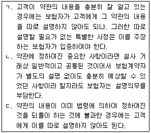
- ㄱ
- ㄱ, ㄴ
- ㄱ, ㄷ
- ㄱ, ㄴ, ㄷ
(정답률: 58%)
3. 보험증권에 관한 설명으로 옳은 것은?
- 보험기간을 정한 때에는 그 시기와 종기는 상법상 손해보험증권의 기재사항에 해당하지 않는다.
- 기존의 보험계약을 연장하는 경우에 보험자는 그 보험증권에 그 사실을 기재함으로써 보험증권의 교부에 갈음할 수 있다.
- 보험계약의 당사자는 보험증권의 교부가 있은 날로부터 2주간내에 한하여 그 증권내용의 정부에 관한 이의를 할 수 있음을 약정할 수 있다.
- 보험증권을 현저하게 훼손한 때에는 보험계약자는 보험자에 대하여 증권의 재교부를 청구할 수 있는데 그 증권작성의 비용은 보험자의 부담으로 한다.
(정답률: 83%)
4. 보험계약에 관한 설명으로 옳지 않은 것은? (문제 오류로 실제 시험에서는 1, 4번이 정답처리 되었습니다. 여기서는 1번을 누르면 정답 처리 됩니다.)
- 보험계약 당사자 쌍방과 피보험자가 보험계약 당시 보험사고가 발행할 수 없는 것임을 알고 있었던 때에는 그 계약은 무효로 한다.
- 대리인에 의하여 보험계약을 체결한 경우에 대리인이 안 사유는 그 본인이 안 것과 동일한 것으로 한다.
- 보험계약은 그 계약전의 어느 시기를 보험기간의 시기로 할 수 있다.
- 보험계약당시에 보험사고가 이미 발생한 때에는 당사자 쌍방과 피보험자가 이를 알지 못한 때에도 그 계약은 무효이다.
(정답률: 72%)
5. 보험대리상 등의 권한에 관한 설명으로 옳은 것은?
- 보험계약자로부터 청약, 고지, 통지, 해지, 취소 등 보험계약에 관한 의사표시를 수령할 수있는 보험대리상의 권한을 보험자가 제한한 경우 보험자는 그 제한을 이유로 선의의 보험 계약자에게 대항하지 못한다.
- 보험자는 보험계약자로부터 보험료를 수령할 수 있는 보험대리상의 권한을 제한할 수 없다.
- 특정한 보험자를 위하여 계속적으로 보험계약의 체결을 중개하는 자라 할지라도 보험대리 상이 아니면 보험자가 작성한 보험증권을 보험계약자에게 교부할 수 있는 권한이 없다.
- 보험대리상은 보험계약자에게 보험계약의 체결, 변경, 해지 등 보험계약에 관한 의사표시를 할 수 있는 권한이 없다.
(정답률: 73%)
6. 상법(보험편)에 관한 설명이다. 옳지 않은 것은 몇 개인가?
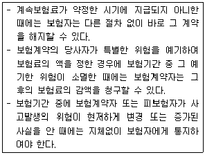
- 0개
- 1개
- 2개
- 3개
(정답률: 66%)
7. 고지의무에 관한 설명으로 옳지 않은 것은?
- 보험계약당시에 보험계약자 또는 피보험자가 고의 또는 중대한 과실로 인하여 중요한 사항을 부실의 고지를 한 때에는 보험자는 그 사실을 안 날로부터 3년내에 계약을 해지할 수 있다.
- 보험자가 서면으로 질문한 사항은 중요한 사항으로 추정한다.
- 손해보험의 피보험자는 고지의무자에 해당한다.
- 보험자가 계약당시에 고지의무 위반의 사실을 알았거나 중대한 과실로 인하여 알지 못한 때에는 보험자는 그 계약을 해지할 수 없다.
(정답률: 67%)
8. B 는 A 의 위임을 받아 A 를 위하여 자신의 명의로 보험자 C 와 손해보험계약을 체결하였다. (단, B 는 C 에게 A 를 위한 계약임을 명시하였고, A 에게는 피보험이익이 존재함) 다음 설명으로 옳지 않은 것은? (다툼이 있으면 판례에 따름)
- A 는 당연히 보험계약의 이익을 받는 자이므로, 특별한 사정이 없는 한 B 의 동의 없이 보험금지급청구권을 행사할 수 있다.
- B 가 파산선고를 받은 경우 A 가 그 권리를 포기하지 아니하는 한 A도 보험료를 지급할 의무가 있다.
- 만일 A 의 위임이 없었다면 B는 이를 C에게 고지하여야 한다.
- A 는 위험변경증가의 통지의무를 부담하지 않는다.
(정답률: 80%)
9. 상법(보험편)에 관한 설명으로 옳은 것은?
- 보험사고가 발생하기 전에 보험계약의 전부 또는 일부를 해지하는 경우에 보험계약자는 당사자간에 다른 약정이 없으면 미경과보험료의 반환을 청구할 수 없다.
- 보험계약자는 계약체결후 지체없이 보험료의 전부 또는 제1회 보험료를 지급하여야 하며, 보험계약자가 이를 지급하지 아니하는 경우에는 다른 약정이 없는 한 계약성립후 2월이 경과하면 그 계약은 해제된 것으로 본다.
- 고지의무위반으로 인하여 보험계약이 해지되고 해지환급금이 지급되지 아니한 경우에 보험 계약자는 일정한 기간내에 연체보험료에 약정이자를 붙여 보험자에게 지급하고 그 계약의 부활을 청구할 수 있다.
- 보험계약의 일부가 무효인 경우에는 보험계약자와 피보험자에게 중대한 과실이 있어도 보험자에 대하여 보험료 일부의 반환을 청구할 수 있다.
(정답률: 75%)
10. 위험변경증가의 통지와 보험계약해지에 관한 설명으로 옳지 않은 것은?
- 보험기간 중에 보험계약자 또는 피보험자가 사고발생의 위험이 현저하게 변경 또는 증가된 사실을 안 때에는 지체없이 보험자에게 통지하여야 한다.
- 보험자가 위험변경증가의 통지를 받은 때에는 1월내에 보험료의 증액을 청구하거나 계약을 해지할 수 있다.
- 위험변경증가의 통지를 해태한 때에는 보험자는 그 사실을 안 날로부터 1월내에 한하여 계약을 해지할 수 있다.
- 보험사고가 발생한 후라도 보험자가 위험변경통지의 해태로 계약을 해지하였을 때에는 보험금을 지급할 책임이 없고, 이미 지급한 보험금의 반환도 청구할 수 없다.
(정답률: 68%)
11. 보험사고발생의 통지의무에 관한 설명으로 옳지 않은 것은?
- 보험사고발생의 통지의무자가 보험사고의 발생을 안 때에는 지체없이 보험자에게 그 통지를 발송하여야 한다.
- 보험사고발생의 통지의무자는 보험계약자 또는 피보험자나 보험수익자이다.
- 통지의 방법으로는 구두, 서면 등이 가능하다.
- 보험자는 보험계약자가 보험사고발생의 통지의무를 해태하여 증가된 손해라도 이를 포함하여 보상할 책임이 있다.
(정답률: 76%)
12. 보험자의 보험금액 지급과 면책에 관한 설명으로 옳지 않은 것은?
- 약정기간이 없는 경우에는 보험자는 보험사고발생의 통지를 받은 후 지체없이 지급할 보험금액을 정하여야 한다.
- 보험자가 보험금액을 정하면 정하여진 날부터 10일내에 보험금액을 지급하여야 한다.
- 보험사고가 전쟁 기타의 변란으로 인하여 생긴 때에는 보험자의 보험금액 지급 책임에 대하여 당사자간에 다른 약정을 할 수 없다.
- 보험사고가 보험계약자의 고의 또는 중대한 과실로 인하여 생긴 때에는 보험자는 보험금액을 지급할 책임이 없다.
(정답률: 72%)
13. 상법 제662조(소멸시효)에 관한 설명으로 옳지 않은 것은?
- 보험료의 반환청구권은 2년간 행사하지 아니하면 시효의 완성으로 소멸한다.
- 적립금의 반환청구권은 3년간 행사하지 아니하면 시효의 완성으로 소멸한다.
- 보험금청구권은 3년간 행사하지 아니하면 시효의 완성으로 소멸한다.
- 보험료청구권은 2년간 행사하지 아니하면 시효의 완성으로 소멸한다.
(정답률: 84%)
14. 상법 제663조(보험계약자 등의 불이익변경금지)에 관한 설명으로 옳지 않은 것은?
- 상법 보험편의 규정은 가계보험에서 당사자간의 특약으로 피보험자의 불이익으로 변경하지 못한다.
- 상법 보험편의 규정은 재보험에서 당사자간의 특약으로 피보험자의 불이익으로 변경하지 못한다.
- 상법 보험편의 규정은 가계보험에서 당사자간의 특약으로 보험계약자의 불이익으로 변경하지 못한다.
- 상법 보험편의 규정은 해상보험에서 당사자간의 특약으로 피보험자의 불이익으로 변경할 수 있다.
(정답률: 67%)
15. 상법 제666조(손해보험증권)의 기재사항으로 옳은 것을 모두 고른 것은?
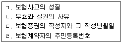
- ㄱ
- ㄴ, ㄹ
- ㄱ, ㄴ, ㄷ
- ㄴ, ㄷ, ㄹ
(정답률: 76%)
16. 초과보험에 관한 설명으로 옳은 것은?
- 초과보험은 보험계약 목적의 가액이 보험금액을 현저하게 초과한 보험이다.
- 보험계약자의 사기로 인하여 체결된 때의 초과보험은 무효로 한다.
- 초과보험에서 보험료의 감액은 소급하여 그 효력이 있다.
- 보험가액이 보험기간 중에 현저하게 감소된 때에는 초과보험에 관한 규정이 적용되지 않는다.
(정답률: 69%)
17. 기평가보험과 미평가보험에 관한 설명으로 옳지 않은 것은?
- 당사자간에 보험계약체결 시 보험가액을 미리 약정하는 보험은 기평가보험이다.
- 기평가보험에서 보험가액은 사고발생시의 가액으로 정한 것으로 추정한다. 그러나 그 가액이 사고발생시의 가액을 현저하게 초과할 때에는 사고발생시의 가액을 보험가액으로 한다.
- 미평가보험이란 보험사고의 발생 이전에는 보험가액을 산정하지 않고, 그 이후에 산정하는 보험을 말한다.
- 미평가보험은 보험계약체결 당시의 가액을 보험가액으로 한다.
(정답률: 79%)
18. 재보험에 관한 설명으로 옳지 않은 것은? (다툼이 있으면 판례에 따름)
- 재보험에 대하여도 제3자에 대한 보험자대위가 적용된다.
- 재보험은 원보험자가 인수한 위험의 전부 또는 일부를 분산시키는 기능을 한다.
- 재보험계약은 원보험계약의 효력에 영향을 미친다.
- 재보험자는 손해보험의 원보험자와 재보험계약을 체결할 수 있다.
(정답률: 78%)
19. 중복보험에 관한 설명으로 옳지 않은 것은?
- 동일한 보험계약의 목적과 동일한 사고에 관하여 수개의 보험계약이 동시에 또는 순차로 체결된 경우에 그 보험가액의 총액이 보험금액을 초과한 때에는 보험자는 각자의 보험금액의 한도에서 연대책임을 진다.
- 중복보험의 경우 보험자 1인에 대한 피보험자의 권리의 포기는 다른 보험자의 권리의무에 영향을 미치지 않는다.
- 중복보험의 경우에는 보험계약자는 각 보험자에 대하여 각 보험계약의 내용을 통지하여야 한다.
- 사기에 의한 중복보험계약은 무효이나 보험자는 그 사실을 안 때까지의 보험료를 청구할 수 있다.
(정답률: 62%)
20. 일부보험에 관한 설명으로 옳지 않은 것은?
- 일부보험이란 보험금액이 보험가액에 미달하는 보험을 말한다.
- 일부보험은 계약체결 당시부터 의식적으로 약정하는 경우도 있고, 계약 성립 후 물가의 인상으로 인하여 자연적으로 발생하는 경우도 있다.
- 일부보험에서는 보험자의 보상책임에 관하여 당사자간에 다른 약정을 할 수 없다.
- 의식적 일부보험의 여부는 계약체결시의 보험가액을 기준으로 판단한다.
(정답률: 72%)
21. 손해보험에서 손해액 산정에 관한 설명으로 옳지 않은 것은?
- 보험자가 보상할 손해액은 그 손해가 발생한 때와 곳의 가액에 의하여 산정한다. 그러나 당사자간에 다른 약정이 있는 때에는 그 신품가액에 의하여 손해액을 산정할 수 있다.
- 보험자가 손해를 보상할 경우에 보험료의 지급을 받지 아니한 잔액이 있어도 보상할 금액에서 이를 공제할 수 없다.
- 손해보상은 원칙적으로 금전으로 하지만 당사자의 합의로 손해의 전부 또는 일부를 현물로 보상할 수 있다.
- 손해액의 산정에 관한 비용은 보험자의 부담으로 한다.
(정답률: 79%)
22. 화재보험에 관한 설명으로 옳지 않은 것은?
- 화재보험계약의 보험자는 화재로 인하여 생긴 손해를 보상할 책임이 있다.
- 화재보험자는 화재의 소방 또는 손해의 감소에 필요한 조치로 인하여 생긴 손해를 보상할 책임이 있다.
- 화재보험증권에는 동산을 보험의 목적으로 한 때에는 그 존치한 장소의 상태와 용도를 기재하여야 한다.
- 집합된 물건을 일괄하여 화재보험의 목적으로 하여도 피보험자의 사용인의 물건은 보험의 목적에 포함되지 않는다.
(정답률: 79%)
23. 손해보험에 관한 설명으로 옳은 것을 모두 고른 것은?
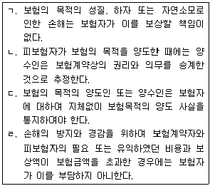
- ㄱ
- ㄱ, ㄹ
- ㄱ, ㄴ, ㄷ
- ㄴ, ㄷ, ㄹ
(정답률: 79%)
24. 보험목적에 관한 보험대위에 관한 설명으로 옳지 않은 것은?
- 약관에 보험자의 대위권 포기를 정할 수 있다.
- 보험금액의 일부를 지급한 보험자도 그 목적에 대한 피보험자의 권리를 취득한다.
- 보험가액의 일부를 보험에 붙인 경우에는 보험자가 취득할 권리는 보험금액의 보험가액에 대한 비율에 따라 이를 정한다.
- 사고를 당한 보험목적에 대하여 피보험자가 가지고 있던 권리는 법률 규정에 의하여 보험자에게 이전되는 것으로 물권변동의 절차를 요하지 않는다.
(정답률: 60%)
25. 화재보험에 관한 설명으로 옳지 않은 것은?
- 집합된 물건을 일괄하여 화재보험의 목적으로 하여도 피보험자의 가족의 물건은 화재보험의 목적에 포함되지 않는다.
- 집합된 물건을 일괄하여 화재보험의 목적으로 한 때에는 그 목적에 속한 물건이 보험기간 중에 수시로 교체된 경우에도 보험사고의 발생 시에 현존하는 물건은 화재보험의 목적에 포함된 것으로 한다.
- 건물을 화재보험의 목적으로 한 때에는 그 소재지, 구조와 용도는 화재보험증권의 기재 사항이다.
- 유가증권은 화재보험증권에 기재하여 화재보험의 목적으로 할 수 있다.
(정답률: 79%)
2과목: 농어업재해보험법령
26. 농어업재해보험법상 용어에 관한 설명이다. ( )에 들어갈 내용은?
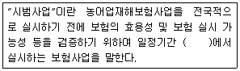
- 보험대상 지역
- 재해 지역
- 담당 지역
- 제한된 지역
(정답률: 75%)
27. 농어업재해보험법령상 농업재해보험심의회 위원을 해촉할 수 있는 사유로 명시된 것이 아닌 것은?
- 심신장애로 인하여 직무를 수행할 수 없게 된 경우
- 직무와 관련 없는 비위사실이 있는 경우
- 품위손상으로 인하여 위원으로 적합하지 아니하다고 인정되는 경우
- 위원 스스로 직무를 수행하는 것이 곤란하다고 의사를 밝히는 경우
(정답률: 77%)
28. 농어업재해보험법상 손해평가사의 자격 취소사유에 해당하지 않는 것은?
- 손해평가사의 자격을 거짓 또는 부정한 방법으로 취득한 사람
- 거짓으로 손해평가를 한 사람
- 다른 사람에게 손해평가사 자격증을 빌려준 사람
- 업무수행 능력과 자질이 부족한 사람
(정답률: 77%)
29. 농어업재해보험법령상 재해보험에 관한 설명으로 옳지 않은 것은?
- 재해보험의 종류는 농작물재해보험, 임산물재해보험, 가축재해보험 및 양식수산물재해보험으로 한다.
- 재해보험에서 보상하는 재해의 범위는 해당 재해의 발생 빈도, 피해 정도 및 객관적인 손해평가방법 등을 고려하여 재해보험의 종류별로 대통령령으로 정한다.
- 보험목적물의 구체적인 범위는 농업재해보험심의회 또는 어업재해보험심의회를 거치지 않고 농업정책보험금융원장이 고시한다.
- 자연재해, 조수해(鳥獸害), 화재 및 보험목적물별로 농림축산식품부장관이 정하여 고시하는 병충해는 농작물ㆍ임산물 재해보험이 보상하는 재해의 범위에 해당한다.
(정답률: 79%)
30. 농어업재해보험법상 보험료율의 산정에 관한 내용이다. ( )에 들어갈 용어는?
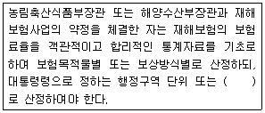
- 지역 단위
- 권역 단위
- 보험목적물 단위
- 보험금액 단위
(정답률: 78%)
31. 농어업재해보험법령상 양식수산물재해보험 손해평가인으로 위촉될 수 있는 자격요건에 해당하지 않는 자는?
- 「농수산물 품질관리법」에 따른 수산물품질관리사
- 「수산생물질병 관리법」에 따른 수산질병관리사
- 「국가기술자격법」에 따른 수산양식기술사
- 조교수로서「고등교육법」제2조에 따른 학교에서 수산물양식 관련학을 2년간 교육한 경력이 있는 자
(정답률: 74%)
32. 농어업재해보험법령상 재해보험사업자가 보험모집 및 손해평가 등 재해보험 업무의 일부를 위탁할 수 있는 자에 해당하지 않는 것은?
- 「보험업법」제187조에 따라 손해사정을 업으로 하는 자
- 「농업협동조합법」에 따라 설립된 지역농업협동조합
- 「수산업협동조합법」에 따라 설립된 지구별 수산업협동조합
- 농어업재해보험 관련 업무를 수행할 목적으로 농림축산식품부장관의 허가를 받아 설립된 영리법인
(정답률: 74%)
33. 농어업재해보험법령상 농업재해보험심의회 및 분과위원회에 관한 설명으로 옳지 않은 것은?
- 심의회는 위원장 및 부위원장 각 1명을 포함한 21명 이내의 위원으로 구성한다.
- 심의회의 회의는 재적위원 3분의 1이상의 출석으로 개의(開議)하고, 출석위원 과반수의 찬성으로 의결한다.
- 분과위원장 및 분과위원은 심의회의 위원 중에서 전문적인 지식과 경험 등을 고려하여 위원장이 지명한다.
- 분과위원회의 회의는 위원장 또는 분과위원장이 필요하다고 인정할 때에 소집한다.
(정답률: 69%)
34. 농어업재해보험법령상 농어업재해재보험기금의 기금수탁관리자가 농림축산식품부장관 및 해양수산부장관에게 제출해야 하는 기금결산보고서에 첨부해야 할 서류로 옳은 것을 모두 고른 것은?
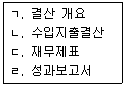
- ㄱ, ㄴ
- ㄴ, ㄷ
- ㄱ, ㄷ, ㄹ
- ㄱ, ㄴ, ㄷ, ㄹ
(정답률: 82%)
35. 농어업재해보험법령상 농어업재해재보험기금에 관한 설명으로 옳지 않은 것은?
- 기금 조성의 재원에는 재보험금의 회수 자금도 포함된다.
- 농림축산식품부장관은 해양수산부장관과 협의하여 기금의 수입과 지출을 명확히 하기 위하여 한국은행에 기금계정을 설치하여야 한다.
- 농림축산식품부장관은 해양수산부장관과 협의를 거쳐 기금의 관리ㆍ운용에 관한 사무의 일부를 농업정책보험금융원에 위탁할 수 있다.
- 농림축산식품부장관은 기금의 관리ㆍ운용에 관한 사무를 위탁한 경우에는 해양수산부장관과 협의하여 소속 공무원 중에서 기금지출원과 기금출납원을 임명한다.
(정답률: 70%)
36. 농어업재해보헙법상 손해평가사가 거짓으로 손해평가를 한 경우에 해당하는 벌칙기준은?
- 1년 이하의 징역 또는 500만원 이하의 벌금
- 1년 이하의 징역 또는 1,000만원 이하의 벌금
- 2년 이하의 징역 또는 1,000만원 이하의 벌금
- 2년 이하의 징역 또는 2,000만원 이하의 벌금
(정답률: 75%)
37. 농어업재해보험법령상 농어업재해재보험기금의 결산에 관한 내용이다. ( )에 들어갈 내용을 순서대로 옳게 나열한 것은? (순서대로 ㄱ, ㄴ)
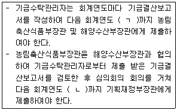
- 1월 31일, 2월 말일
- 1월 31일, 6월 30일
- 2월 15일, 2월 말일
- 2월 15일, 6월 30일
(정답률: 70%)
38. 농어업재해보험법령상 보험가입촉진계획의 수립과 제출 등에 관한 내용이다. ( )에 들어갈 내용을 순서대로 옳게 나열한 것은?
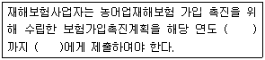
- 1월 31일, 농업정책보험금융원장
- 1월 31일, 농림축산식품부장관 또는 해양수산부장관
- 2월 말일, 농업정책보험금융원장
- 2월 말일, 농림축산식품부장관 또는 해양수산부장관
(정답률: 59%)
39. 농어업재해보험법령상 과태료부과의 개별기준에 관한 설명으로 옳은 것은?
- 재해보험사업자의 발기인이 법 제18조에서 적용하는 「보험업법」제133조에 따른 검사를 기피한 경우: 200만원
- 법 제29조에 따른 보고 또는 관계 서류 제출을 거짓으로 한 경우: 200만원
- 법 제10조 제2항에서 준용하는 「보험업법」제97조 제1항을 위반하여 보험계약의 모집에 관한 금지행위를 한 경우: 500만원
- 법 제10조 제2항에서 준용하는「보험업법」제95조를 위반하여 보험안내를 한 자로서 재해보험사업자가 아닌 경우: 1,000만원
(정답률: 56%)
40. 농업재해보험 손해평가요령에 따른 종합위험방식 상품에서 “수확감소보장 및 과실손해보장”의「수확 전」조사내용과 조사시기를 바르게 연결한 것은?
- 나무피해 조사 - 결실완료 후
- 이앙(직파)불능피해 조사 - 수정완료 후
- 경작불능피해 조사 - 사고접수 후 지체 없이
- 재이앙(재직파)피해 조사 - 이앙 한계일(7.31)이후
(정답률: 63%)
41. 농업재해보험 손해평가요령에 따른 손해수량 조사방법과 관련하여 특정위험방식 상품 “단감”의 「발아기 〜적과 전」생육시기에 해당되는 재해를 모두 고른 것은?
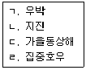
- ㄱ, ㄴ
- ㄴ, ㄷ
- ㄱ, ㄴ, ㄹ
- ㄱ, ㄷ, ㄹ
(정답률: 63%)
42. 농업재해보험 손해평가요령에 따른 농업재해보험의 종류에 해당하는 것을 모두 고른 것은?
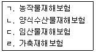
- ㄱ, ㄴ
- ㄱ, ㄹ
- ㄱ, ㄷ, ㄹ
- ㄴ, ㄷ, ㄹ
(정답률: 73%)
43. 농업재해보험 손해평가요령에 따른 손해평가인 정기교육의 세부내용으로 명시되어 있지 않은 것은?
- 손해평가의 절차 및 방법
- 농업재해보험의 종류별 약관
- 풍수해보험에 관한 기초지식
- 피해유형별 현지조사표 작성 실습
(정답률: 72%)
44. 농어업재해보험법 및 농업재해보험 손해평가요령에 따른 교차손해평가에 관한 내용으로 옳지 않은 것은?
- 교차손해평가를 위해 손해평가반을 구성할 경우 손해평가사 2인 이상이 포함되어야 한다.
- 교차손해평가의 절차ㆍ방법 등에 필요한 사항은 농림축산식품부장관 또는 해양수산부장관이 정한다.
- 재해보험사업자는 교차손해평가가 필요한 경우 재해보험 가입규모, 가입분포 등을 고려하여 교차손해평가 대상 시ㆍ군ㆍ구(자치구를 말한다)를 선정하여야 한다.
- 재해보험사업자는 교차손해평가 대상지로 선정한 시ㆍ군ㆍ구(자치구를 말한다) 내에서 손해평가 경력, 타 지역 조사 가능여부 등을 고려하여 교차손해평가를 담당할 지역손해평가인을 선발하여야 한다.
(정답률: 73%)
45. 농업재해보험 손해평가요령에 따른 보험목적물별 손해평가 단위를 바르게 연결한 것은?
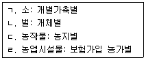
- ㄱ, ㄴ
- ㄱ, ㄷ
- ㄴ, ㄹ
- ㄷ, ㄹ
(정답률: 74%)
46. 농업재해보험 손해평가요령에 따른 농작물의 보험금 산정에서 종합위험방식 “벼” 의 보장 범위가 아닌 것은?
- 생산비보장
- 수확불능보장
- 이앙ㆍ직파불능보장
- 경작불능보장
(정답률: 64%)
47. 농업재해보험 손해평가요령에 따른 종합위험방식 「과실손해보장」에서 “오디”의 경우 다음 조건으로 산정한 보험금은?
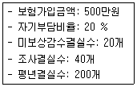
- 100만원
- 200만원
- 250만원
- 300만원
(정답률: 65%)
48. 농업재해보험 손해평가요령에 따른 종합위험방식 상품「수확 전」“복분자” 에 해당하는 조사내용은?
- 결과모지 및 수정불량 조사
- 결실수 조사
- 피해과실수 조사
- 재파종피해 조사
(정답률: 58%)
49. 농업재해보험 손해평가요령에 따른 특정위험방식 상품 “사과, 배, 단감, 떫은감”의 조사방법으로서 전수조사가 명시된 조사내용은?
- 낙과피해 조사
- 유과타박률 조사
- 적과후착과수 조사
- 피해사실확인 조사
(정답률: 54%)
50. 농업재해보험 손해평가요령에 따른 적과전종합위험방식 「과실손해보장」에서 “사과”의 경우 다음 조건으로 산정한 보험금은?
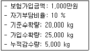
- 100만원
- 150만원
- 250만원
- 700만원
(정답률: 44%)
3과목: 재배학 및 원예작물학
51. 과실의 구조적 특징에 따른 분류로 옳은 것은?
- 인과류 - 사과, 배
- 핵과류 - 밤, 호두
- 장과류 - 복숭아, 자두
- 각과류 - 포도, 참다래
(정답률: 77%)
52. 다음이 설명하는 번식방법은?
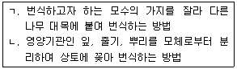
- ㄱ: 삽목, ㄴ: 접목
- ㄱ: 취목, ㄴ: 삽목
- ㄱ: 접목, ㄴ: 분주
- ㄱ: 접목, ㄴ: 삽목
(정답률: 74%)
53. 다음 A농가가 실시한 휴면타파 처리는?
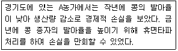
- 훈증 처리
- 콜히친 처리
- 토마토톤 처리
- 종피파상 처리
(정답률: 66%)
54. 병해충의 물리적 방제 방법이 아닌 것은?
- 천적곤충
- 토양가열
- 증기소독
- 유인포살
(정답률: 80%)
55. 다음이 설명하는 채소는?
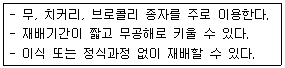
- 조미채소
- 뿌리채소
- 새싹채소
- 과일채소
(정답률: 71%)
56. A농가가 오이의 성 결정시기에 받은 영농지도는?
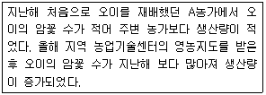
- 고온 및 단일 환경으로 관리
- 저온 및 장일 환경으로 관리
- 저온 및 단일 환경으로 관리
- 고온 및 장일 환경으로 관리
(정답률: 60%)
57. 토마토의 생리장해에 관한 설명이다. 생리장해와 처방방법을 옳게 묶은 것은?
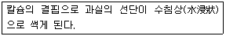
- 공동과 - 엽면 시비
- 기형과 - 약제 살포
- 배꼽썩음과 - 엽면 시비
- 줄썩음과 - 약제 살포
(정답률: 74%)
58. 다음이 설명하는 것은?
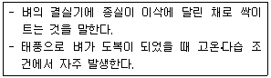
- 출수(出穗)
- 수발아(穗發芽)
- 맹아(萌芽)
- 최아(催芽)
(정답률: 80%)
59. 토양에 석회를 시용하는 주요 목적은?
- 토양 피복
- 토양 수분 증가
- 산성토양 개량
- 토양생물 활성 증진
(정답률: 78%)
60. 다음 설명이 틀린 것은?
- 동해는 물의 빙점보다 낮은 온도에서 발생한다.
- 일소현상, 결구장해, 조기추대는 저온장해 증상이다.
- 온대과수는 내동성이 강한 편이나, 열대과수는 내동성이 약하다.
- 서리피해 방지로 톱밥 및 왕겨 태우기가 있다.
(정답률: 80%)
61. 다음과 관련되는 현상은?
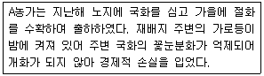
- 도장 현상
- 광중단 현상
- 순멎이 현상
- 블라스팅 현상
(정답률: 74%)
62. B씨가 저장한 화훼는?
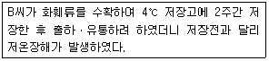
- 장미
- 금어초
- 카네이션
- 안스리움
(정답률: 63%)
63. 시설원예 자재에 관한 설명으로 옳지 않은 것은?
- 피복자재는 열전도율이 높아야 한다.
- 피복자재는 외부 충격에 강해야 한다.
- 골격자재는 내부식성이 강해야 한다.
- 골격자재는 철재 및 경합금재가 사용된다.
(정답률: 81%)
64. 작물재배 시 습해 방지대책으로 옳지 않은 것은?
- 배수
- 토양개량
- 증발억제제 살포
- 내습성 작물 선택
(정답률: 79%)
65. 다음이 설명하는 현상은?
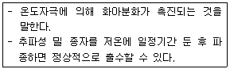
- 춘화 현상
- 경화 현상
- 추대 현상
- 하고 현상
(정답률: 74%)
66. 토양 입단 파괴요인을 모두 고른 것은?
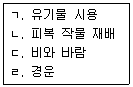
- ㄱ, ㄴ
- ㄱ, ㄹ
- ㄴ, ㄷ
- ㄷ, ㄹ
(정답률: 74%)
67. 토양 수분을 pF값이 낮은 것부터 옳게 나열한 것은?
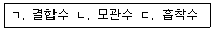
- ㄱ - ㄴ - ㄷ
- ㄴ - ㄱ - ㄷ
- ㄴ - ㄷ - ㄱ
- ㄷ - ㄴ - ㄱ
(정답률: 68%)
68. 사과 모양과 온도와의 관계를 설명한 것이다. ( )에 들어갈 내용을 순서대로 나열한 것은?
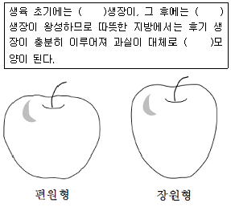
- 종축, 횡축, 편원형
- 종축, 횡축, 장원형
- 횡축, 종축, 편원형
- 횡축, 종축, 장원형
(정답률: 57%)
69. 우리나라의 우박 피해에 관한 설명으로 옳지 않은 것은?
- 사과, 배의 착과기와 성숙기에 많이 발생한다.
- 돌발적이고 단기간에 큰 피해가 발생한다.
- 지리적 조건과 관계없이 광범위하게 분포한다.
- 수관 상부에 그물을 씌워 피해를 경감시킬 수 있다.
(정답률: 71%)
70. 다음이 설명하는 것은?
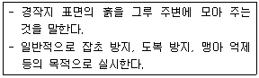
- 멀칭
- 배토
- 중경
- 쇄토
(정답률: 65%)
71. 과수작물에서 무기양분의 불균형으로 발생하는 생리장해는?
- 일소
- 동록
- 열과
- 고두병
(정답률: 61%)
72. 다음이 설명하는 해충과 천적의 연결이 옳은 것은?
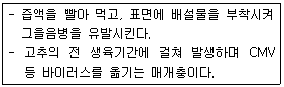
- 진딧물 - 진디벌
- 잎응애류 - 칠레이리응애
- 잎굴파리 - 굴파리좀벌
- 총채벌레 - 애꽃노린재
(정답률: 64%)
73. 작물의 로제트(rosette)현상을 타파하기 위한 생장조절물질은?
- 옥신
- 지베렐린
- 에틸렌
- 아브시스산
(정답률: 64%)
74. 과수재배 시 일조(日照) 부족 현상은?
- 신초 웃자람
- 꽃눈 형성 촉진
- 과실 비대 촉진
- 사과 착색 촉진
(정답률: 72%)
75. 다음 피복재 중 보온성이 가장 높은 연질 필름은?
- 폴리에틸렌(PE) 필름
- 염화비닐(PVC) 필름
- 불소계 수지(ETFE) 필름
- 에틸렌 아세트산비닐(EVA) 필름
(정답률: 63%)